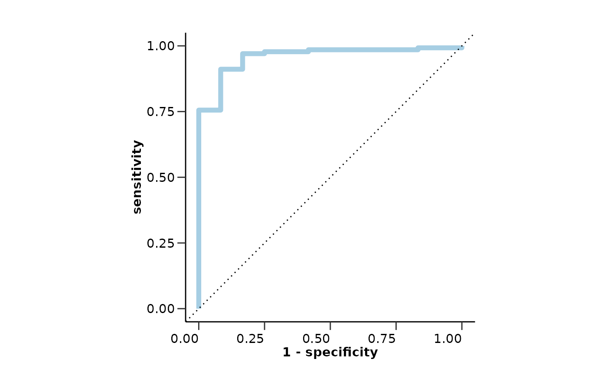
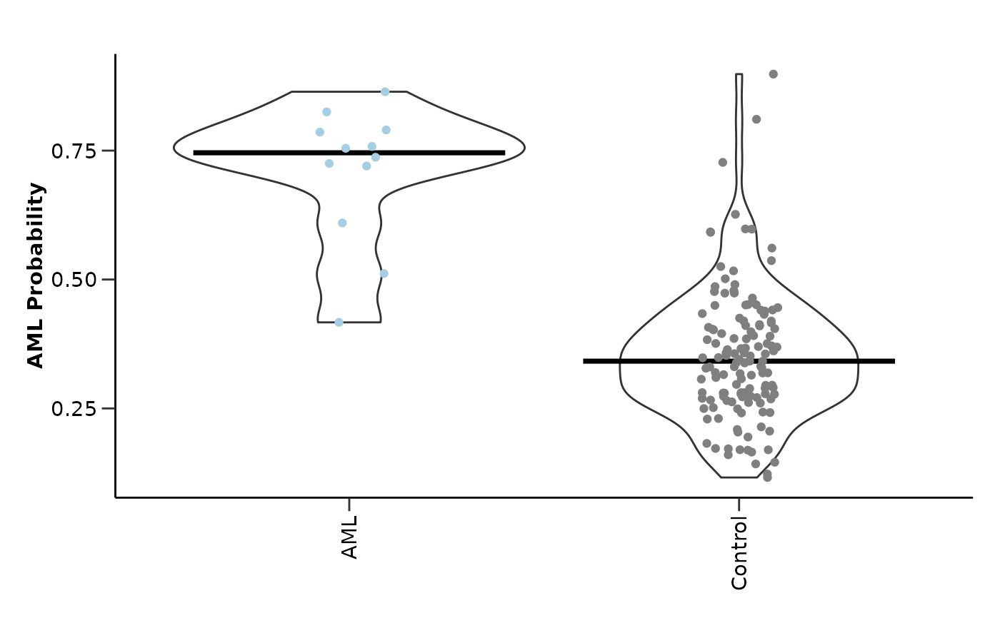
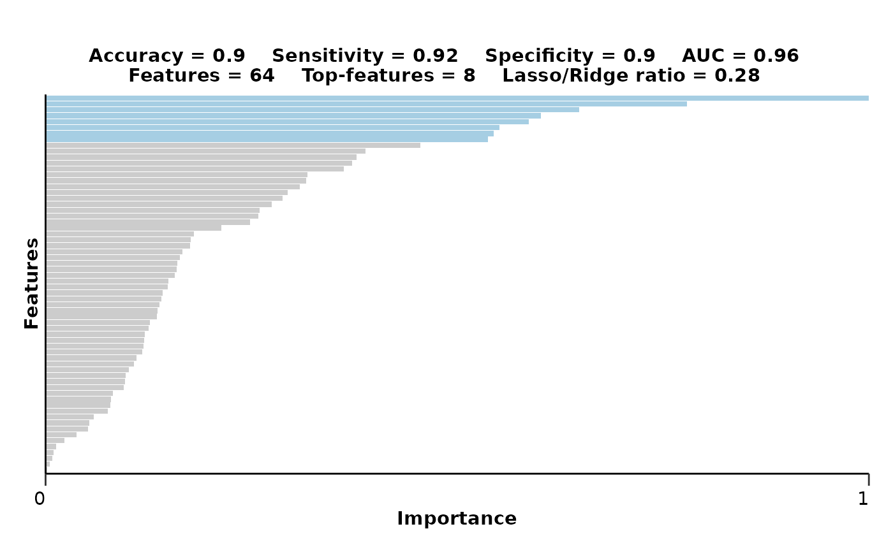
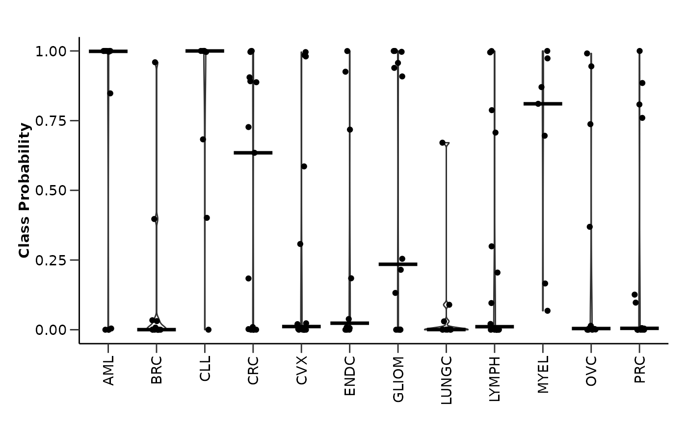
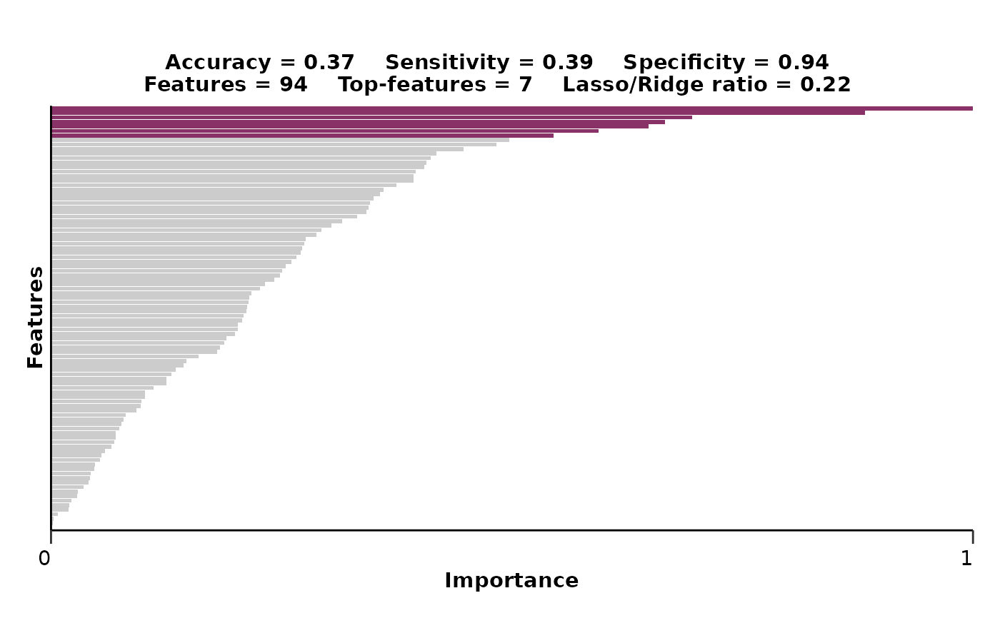
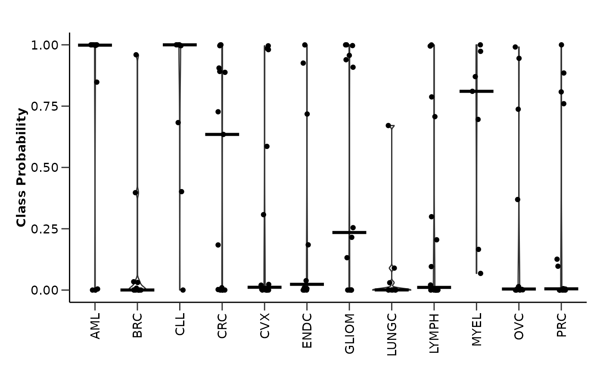
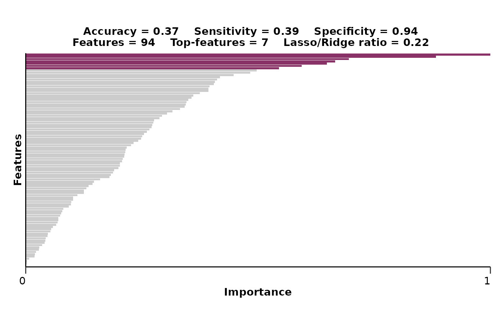

hd_model_rreg() runs the regularized regression model pipeline. It creates
class-balanced case-control groups for the train set, tunes the model, evaluates
the model, and plots the feature importance and model performance.
Usage
hd_model_rreg(
dat,
variable = "Disease",
case,
control = NULL,
balance_groups = TRUE,
cor_threshold = 0.9,
grid_size = 30,
cv_sets = 5,
mixture = NULL,
palette = NULL,
plot_y_labels = FALSE,
verbose = TRUE,
plot_title = c("accuracy", "sensitivity", "specificity", "auc", "features",
"top-features", "mixture"),
seed = 123
)Arguments
- dat
An
hd_modelobject or a list containing the train and test data.- variable
The name of the metadata variable containing the case and control groups. Default is "Disease".
- case
The case class.
- control
The control groups. If NULL, it will be set to all other unique values of the variable that are not the case. Default is NULL.
- balance_groups
Whether to balance the groups in the train set. It is only valid in binary classification settings. Default is TRUE.
- cor_threshold
Threshold of absolute correlation values. This will be used to remove the minimum number of features so that all their resulting absolute correlations are less than this value.
- grid_size
Size of the hyperparameter optimization grid. Default is 30.
- cv_sets
Number of cross-validation sets. Default is 5.
- mixture
The mixture parameter for the elastic net model (1 - LASSO, 0 - Ridge). If NULL it will be tuned. Default is NULL.
- palette
The color palette for the classes. If it is a character, it should be one of the palettes from
hd_palettes(). In case of a continuous variable it is not required. Default is NULL.- plot_y_labels
Whether to show y-axis labels in the feature importance plot. Default is FALSE.
- verbose
Whether to print progress messages. Default is TRUE.
- plot_title
Vector of title elements to include in the plot. It should be a subset of
c("accuracy", "sensitivity", "specificity", "auc", "features", "top-features", "mixture").- seed
Seed for reproducibility. Default is 123.
Value
A model object containing the train and test data, the metrics, the ROC curve, the selected features, their importance, and the mixture parameter.
Details
This model will not work if the number of predictors is less than 2.
However, if this is the case, consider using hd_model_lr() instead if it is
a classification problem. In case it is a regression problem, consider using
hd_plot_regression() directly to plot your feature against the target variable.
The numeric predictors will be normalized and the nominal predictors will
be one-hot encoded. If the data contain missing values, KNN (k=5) imputation
will be used to impute. If case is provided, the model will be a binary
classification model. If case is NULL, the model will be a multiclass classification model.
Scales feature importance values to the (0, 1) range. For permutation-based importance (e.g., from Random Forest), negative values are first set to zero to reflect non-informative or noisy features. The maximum value is then scaled to 1, zero remains zero, and all other values are linearly scaled between 0 and 1 accordingly. This facilitates more interpretable comparison of feature importance in each model.
In multi-class models, the groups in the train set are not balanced and sensitivity and specificity
are calculated via macro-averaging. In case the model is run against a continuous variable,
the palette will be ignored and we have to change the elements of plot_title to rmse and rsq
to plot the RMSE and RSQ instead of accuracy, sensitivity, specificity, and auc
(see examples bellow).
Examples
# Initialize an HDAnalyzeR object
hd_object <- hd_initialize(example_data, example_metadata)
# Split the data into training and test sets
hd_split <- hd_split_data(hd_object, variable = "Disease")
#> Warning: Too little data to stratify.
#> • Resampling will be unstratified.
# Run the regularized regression model pipeline
hd_model_rreg(hd_split,
variable = "Disease",
case = "AML",
grid_size = 5,
palette = "cancers12",
verbose = FALSE)
#> The groups in the train set are balanced. If you do not want to balance the groups, set `balance_groups = FALSE`.
#> Loaded glmnet 4.1-10
#> $train_data
#> # A tibble: 76 × 102
#> DAid Disease AARSD1 ABL1 ACAA1 ACAN ACE2 ACOX1 ACP5 ACP6
#> <chr> <fct> <dbl> <dbl> <dbl> <dbl> <dbl> <dbl> <dbl> <dbl>
#> 1 DA00003 1 NA NA NA 0.989 NA 0.330 1.37 NA
#> 2 DA00004 1 3.41 3.38 1.69 NA 1.52 NA 0.841 0.582
#> 3 DA00005 1 5.01 5.05 0.128 0.401 -0.933 -0.584 0.0265 1.16
#> 4 DA00006 1 6.83 1.18 -1.74 -0.156 1.53 -0.721 0.620 0.527
#> 5 DA00007 1 NA NA 3.96 0.682 3.14 2.62 1.47 2.25
#> 6 DA00008 1 2.78 0.812 -0.552 0.982 -0.101 -0.304 0.376 -0.826
#> 7 DA00010 1 1.83 1.21 -0.912 -1.04 -0.0918 -0.304 1.69 0.0920
#> 8 DA00011 1 3.48 4.96 3.50 -0.338 4.48 1.26 2.18 1.62
#> 9 DA00012 1 4.31 0.710 -1.44 -0.218 -0.469 -0.361 -0.0714 -1.30
#> 10 DA00013 1 1.31 2.52 1.11 0.997 4.56 -1.35 0.833 2.33
#> # ℹ 66 more rows
#> # ℹ 92 more variables: ACTA2 <dbl>, ACTN4 <dbl>, ACY1 <dbl>, ADA <dbl>,
#> # ADA2 <dbl>, ADAM15 <dbl>, ADAM23 <dbl>, ADAM8 <dbl>, ADAMTS13 <dbl>,
#> # ADAMTS15 <dbl>, ADAMTS16 <dbl>, ADAMTS8 <dbl>, ADCYAP1R1 <dbl>,
#> # ADGRE2 <dbl>, ADGRE5 <dbl>, ADGRG1 <dbl>, ADGRG2 <dbl>, ADH4 <dbl>,
#> # ADM <dbl>, AGER <dbl>, AGR2 <dbl>, AGR3 <dbl>, AGRN <dbl>, AGRP <dbl>,
#> # AGXT <dbl>, AHCY <dbl>, AHSP <dbl>, AIF1 <dbl>, AIFM1 <dbl>, AK1 <dbl>, …
#>
#> $test_data
#> # A tibble: 147 × 102
#> DAid Disease AARSD1 ABL1 ACAA1 ACAN ACE2 ACOX1 ACP5 ACP6 ACTA2
#> <chr> <fct> <dbl> <dbl> <dbl> <dbl> <dbl> <dbl> <dbl> <dbl> <dbl>
#> 1 DA000… 1 3.39 2.76 1.71 0.0333 1.76 -0.919 1.54 2.15 2.81
#> 2 DA000… 1 1.42 1.25 -0.816 -0.459 0.826 -0.902 0.647 1.30 0.798
#> 3 DA000… 1 4.39 3.34 -0.452 -0.868 0.395 1.71 1.49 -0.0285 0.200
#> 4 DA000… 1 3.31 1.90 NA -0.926 0.408 0.687 1.03 0.612 2.19
#> 5 DA000… 1 1.46 0.832 -2.73 -0.371 2.27 0.0234 0.144 0.826 1.98
#> 6 DA000… 1 2.62 2.48 0.537 -0.215 1.82 0.290 1.27 1.11 0.206
#> 7 DA000… 1 2.47 2.16 -0.486 NA 0.386 NA 1.38 0.536 1.86
#> 8 DA000… 1 3.62 3.06 -1.34 0.965 1.05 1.53 0.152 -0.124 2.81
#> 9 DA000… 1 4.39 3.31 0.454 0.290 2.68 0.116 -1.32 0.945 2.14
#> 10 DA000… 1 0.964 2.94 1.55 1.67 2.50 0.164 1.83 1.46 3.03
#> # ℹ 137 more rows
#> # ℹ 91 more variables: ACTN4 <dbl>, ACY1 <dbl>, ADA <dbl>, ADA2 <dbl>,
#> # ADAM15 <dbl>, ADAM23 <dbl>, ADAM8 <dbl>, ADAMTS13 <dbl>, ADAMTS15 <dbl>,
#> # ADAMTS16 <dbl>, ADAMTS8 <dbl>, ADCYAP1R1 <dbl>, ADGRE2 <dbl>, ADGRE5 <dbl>,
#> # ADGRG1 <dbl>, ADGRG2 <dbl>, ADH4 <dbl>, ADM <dbl>, AGER <dbl>, AGR2 <dbl>,
#> # AGR3 <dbl>, AGRN <dbl>, AGRP <dbl>, AGXT <dbl>, AHCY <dbl>, AHSP <dbl>,
#> # AIF1 <dbl>, AIFM1 <dbl>, AK1 <dbl>, AKR1B1 <dbl>, AKR1C4 <dbl>, …
#>
#> $model_type
#> [1] "binary_class"
#>
#> $final_workflow
#> ══ Workflow ════════════════════════════════════════════════════════════════════
#> Preprocessor: Recipe
#> Model: logistic_reg()
#>
#> ── Preprocessor ────────────────────────────────────────────────────────────────
#> 5 Recipe Steps
#>
#> • step_dummy()
#> • step_nzv()
#> • step_normalize()
#> • step_corr()
#> • step_impute_knn()
#>
#> ── Model ───────────────────────────────────────────────────────────────────────
#> Logistic Regression Model Specification (classification)
#>
#> Main Arguments:
#> penalty = 0.225833639858074
#> mixture = 0.282826104864944
#>
#> Computational engine: glmnet
#>
#>
#> $metrics
#> $metrics$accuracy
#> [1] 0.9047619
#>
#> $metrics$sensitivity
#> [1] 0.9166667
#>
#> $metrics$specificity
#> [1] 0.9037037
#>
#> $metrics$auc
#> [1] 0.958642
#>
#> $metrics$confusion_matrix
#> Truth
#> Prediction 0 1
#> 0 122 1
#> 1 13 11
#>
#>
#> $roc_curve

#>
#> $probability_plot
#> Warning: `label` cannot be a <ggplot2::element_blank> object.

#>
#> $mixture
#> [1] 0.2828261
#>
#> $features
#> # A tibble: 100 × 4
#> Feature Importance Sign Scaled_Importance
#> <fct> <dbl> <chr> <dbl>
#> 1 ANGPT1 0.313 NEG 1
#> 2 ADGRG1 0.245 POS 0.780
#> 3 ADA 0.185 POS 0.589
#> 4 AMIGO2 0.170 NEG 0.542
#> 5 APBB1IP 0.152 POS 0.484
#> 6 APEX1 0.137 POS 0.437
#> 7 ANGPT2 0.137 POS 0.436
#> 8 ABL1 0.124 POS 0.394
#> 9 AZU1 0.112 POS 0.356
#> 10 AHCY 0.0963 POS 0.307
#> # ℹ 90 more rows
#>
#> $feat_imp_plot

#>
#> attr(,"class")
#> [1] "hd_model"
# Run the multiclass regularized regression model pipeline
hd_model_rreg(hd_split,
variable = "Disease",
case = NULL,
grid_size = 2,
cv_sets = 2,
verbose = FALSE)
#> The groups in the train set are balanced. If you do not want to balance the groups, set `balance_groups = FALSE`.
#> Warning: Too little data to stratify.
#> • Resampling will be unstratified.
#> $train_data
#> # A tibble: 439 × 102
#> DAid Disease AARSD1 ABL1 ACAA1 ACAN ACE2 ACOX1 ACP5 ACP6
#> <chr> <fct> <dbl> <dbl> <dbl> <dbl> <dbl> <dbl> <dbl> <dbl>
#> 1 DA00003 AML NA NA NA 0.989 NA 0.330 1.37 NA
#> 2 DA00004 AML 3.41 3.38 1.69 NA 1.52 NA 0.841 0.582
#> 3 DA00005 AML 5.01 5.05 0.128 0.401 -0.933 -0.584 0.0265 1.16
#> 4 DA00006 AML 6.83 1.18 -1.74 -0.156 1.53 -0.721 0.620 0.527
#> 5 DA00007 AML NA NA 3.96 0.682 3.14 2.62 1.47 2.25
#> 6 DA00008 AML 2.78 0.812 -0.552 0.982 -0.101 -0.304 0.376 -0.826
#> 7 DA00010 AML 1.83 1.21 -0.912 -1.04 -0.0918 -0.304 1.69 0.0920
#> 8 DA00011 AML 3.48 4.96 3.50 -0.338 4.48 1.26 2.18 1.62
#> 9 DA00012 AML 4.31 0.710 -1.44 -0.218 -0.469 -0.361 -0.0714 -1.30
#> 10 DA00013 AML 1.31 2.52 1.11 0.997 4.56 -1.35 0.833 2.33
#> # ℹ 429 more rows
#> # ℹ 92 more variables: ACTA2 <dbl>, ACTN4 <dbl>, ACY1 <dbl>, ADA <dbl>,
#> # ADA2 <dbl>, ADAM15 <dbl>, ADAM23 <dbl>, ADAM8 <dbl>, ADAMTS13 <dbl>,
#> # ADAMTS15 <dbl>, ADAMTS16 <dbl>, ADAMTS8 <dbl>, ADCYAP1R1 <dbl>,
#> # ADGRE2 <dbl>, ADGRE5 <dbl>, ADGRG1 <dbl>, ADGRG2 <dbl>, ADH4 <dbl>,
#> # ADM <dbl>, AGER <dbl>, AGR2 <dbl>, AGR3 <dbl>, AGRN <dbl>, AGRP <dbl>,
#> # AGXT <dbl>, AHCY <dbl>, AHSP <dbl>, AIF1 <dbl>, AIFM1 <dbl>, AK1 <dbl>, …
#>
#> $test_data
#> # A tibble: 147 × 102
#> DAid Disease AARSD1 ABL1 ACAA1 ACAN ACE2 ACOX1 ACP5 ACP6 ACTA2
#> <chr> <fct> <dbl> <dbl> <dbl> <dbl> <dbl> <dbl> <dbl> <dbl> <dbl>
#> 1 DA000… AML 3.39 2.76 1.71 0.0333 1.76 -0.919 1.54 2.15 2.81
#> 2 DA000… AML 1.42 1.25 -0.816 -0.459 0.826 -0.902 0.647 1.30 0.798
#> 3 DA000… AML 4.39 3.34 -0.452 -0.868 0.395 1.71 1.49 -0.0285 0.200
#> 4 DA000… AML 3.31 1.90 NA -0.926 0.408 0.687 1.03 0.612 2.19
#> 5 DA000… AML 1.46 0.832 -2.73 -0.371 2.27 0.0234 0.144 0.826 1.98
#> 6 DA000… AML 2.62 2.48 0.537 -0.215 1.82 0.290 1.27 1.11 0.206
#> 7 DA000… AML 2.47 2.16 -0.486 NA 0.386 NA 1.38 0.536 1.86
#> 8 DA000… AML 3.62 3.06 -1.34 0.965 1.05 1.53 0.152 -0.124 2.81
#> 9 DA000… AML 4.39 3.31 0.454 0.290 2.68 0.116 -1.32 0.945 2.14
#> 10 DA000… AML 0.964 2.94 1.55 1.67 2.50 0.164 1.83 1.46 3.03
#> # ℹ 137 more rows
#> # ℹ 91 more variables: ACTN4 <dbl>, ACY1 <dbl>, ADA <dbl>, ADA2 <dbl>,
#> # ADAM15 <dbl>, ADAM23 <dbl>, ADAM8 <dbl>, ADAMTS13 <dbl>, ADAMTS15 <dbl>,
#> # ADAMTS16 <dbl>, ADAMTS8 <dbl>, ADCYAP1R1 <dbl>, ADGRE2 <dbl>, ADGRE5 <dbl>,
#> # ADGRG1 <dbl>, ADGRG2 <dbl>, ADH4 <dbl>, ADM <dbl>, AGER <dbl>, AGR2 <dbl>,
#> # AGR3 <dbl>, AGRN <dbl>, AGRP <dbl>, AGXT <dbl>, AHCY <dbl>, AHSP <dbl>,
#> # AIF1 <dbl>, AIFM1 <dbl>, AK1 <dbl>, AKR1B1 <dbl>, AKR1C4 <dbl>, …
#>
#> $model_type
#> [1] "multi_class"
#>
#> $final_workflow
#> ══ Workflow ════════════════════════════════════════════════════════════════════
#> Preprocessor: Recipe
#> Model: multinom_reg()
#>
#> ── Preprocessor ────────────────────────────────────────────────────────────────
#> 5 Recipe Steps
#>
#> • step_dummy()
#> • step_nzv()
#> • step_normalize()
#> • step_corr()
#> • step_impute_knn()
#>
#> ── Model ───────────────────────────────────────────────────────────────────────
#> Multinomial Regression Model Specification (classification)
#>
#> Main Arguments:
#> penalty = 4.45590449619826e-06
#> mixture = 0.220184963848442
#>
#> Computational engine: glmnet
#>
#>
#> $metrics
#> $metrics$accuracy
#> [1] 0.3673469
#>
#> $metrics$sensitivity
#> [1] 0.3872563
#>
#> $metrics$specificity
#> [1] 0.9424284
#>
#> $metrics$auc
#> # A tibble: 14 × 2
#> Disease AUC
#> <chr> <dbl>
#> 1 AML 0.906
#> 2 BRC 0.772
#> 3 CLL 0.978
#> 4 CRC 0.905
#> 5 CVX 0.751
#> 6 ENDC 0.774
#> 7 GLIOM 0.778
#> 8 LUNGC 0.690
#> 9 LYMPH 0.715
#> 10 MYEL 0.964
#> 11 OVC 0.759
#> 12 PRC 0.732
#> 13 macro 0.810
#> 14 micro 0.806
#>
#> $metrics$confusion_matrix
#> Truth
#> Prediction AML BRC CLL CRC CVX ENDC GLIOM LUNGC LYMPH MYEL OVC PRC
#> AML 8 0 0 0 0 0 1 0 2 0 1 0
#> BRC 0 1 0 0 0 0 0 1 1 0 0 1
#> CLL 0 1 7 0 0 0 0 0 1 0 0 0
#> CRC 0 1 0 8 0 0 0 3 1 0 1 0
#> CVX 0 2 1 0 4 4 0 1 2 0 2 3
#> ENDC 0 0 0 0 4 3 1 1 0 1 2 2
#> GLIOM 0 2 0 0 0 0 6 0 1 1 0 1
#> LUNGC 1 2 0 4 0 1 1 1 0 0 4 2
#> LYMPH 2 2 0 0 0 0 0 2 4 0 0 0
#> MYEL 1 0 0 0 2 1 2 0 1 5 0 0
#> OVC 0 0 0 1 1 1 2 2 2 0 3 1
#> PRC 0 1 1 2 3 0 1 0 1 0 0 4
#>
#>
#> $roc_curve
 #>
#> $probability_plot
#> Warning: `label` cannot be a <ggplot2::element_blank> object.

#>
#> $mixture
#> [1] 0.220185
#>
#> $features
#> # A tibble: 1,200 × 5
#> Class Feature Importance Sign Scaled_Importance
#> <chr> <chr> <dbl> <chr> <dbl>
#> 1 AML AHCY 2.96 POS 1
#> 2 AML ANGPT1 2.61 NEG 0.883
#> 3 AML AK1 2.06 NEG 0.695
#> 4 AML APEX1 1.97 POS 0.666
#> 5 AML ADAM8 1.92 NEG 0.648
#> 6 AML ARTN 1.76 POS 0.594
#> 7 AML ARID4B 1.61 NEG 0.545
#> 8 AML ADAMTS16 1.47 NEG 0.497
#> 9 AML ALPP 1.43 NEG 0.483
#> 10 AML ADGRG1 1.32 POS 0.447
#> # ℹ 1,190 more rows
#>
#> $feat_imp_plot

#>
#> attr(,"class")
#> [1] "hd_model"
# Run the regularized regression model pipeline for a continuous variable
# Split the data into training and test sets
hd_split <- hd_split_data(hd_object, variable = "Age")
# Run the regularized regression model pipeline
hd_model_rreg(hd_split,
variable = "Age",
case = NULL,
grid_size = 2,
cv_sets = 2,
plot_title = c("rmse",
"rsq",
"features",
"mixture"),
verbose = FALSE)
#> The groups in the train set are balanced. If you do not want to balance the groups, set `balance_groups = FALSE`.
#> Error in stopifnot(!is.null(i)): reached elapsed time limit
#>
#> $probability_plot
#> Warning: `label` cannot be a <ggplot2::element_blank> object.

#>
#> $mixture
#> [1] 0.220185
#>
#> $features
#> # A tibble: 1,200 × 5
#> Class Feature Importance Sign Scaled_Importance
#> <chr> <chr> <dbl> <chr> <dbl>
#> 1 AML AHCY 2.96 POS 1
#> 2 AML ANGPT1 2.61 NEG 0.883
#> 3 AML AK1 2.06 NEG 0.695
#> 4 AML APEX1 1.97 POS 0.666
#> 5 AML ADAM8 1.92 NEG 0.648
#> 6 AML ARTN 1.76 POS 0.594
#> 7 AML ARID4B 1.61 NEG 0.545
#> 8 AML ADAMTS16 1.47 NEG 0.497
#> 9 AML ALPP 1.43 NEG 0.483
#> 10 AML ADGRG1 1.32 POS 0.447
#> # ℹ 1,190 more rows
#>
#> $feat_imp_plot

#>
#> attr(,"class")
#> [1] "hd_model"
# Run the regularized regression model pipeline for a continuous variable
# Split the data into training and test sets
hd_split <- hd_split_data(hd_object, variable = "Age")
# Run the regularized regression model pipeline
hd_model_rreg(hd_split,
variable = "Age",
case = NULL,
grid_size = 2,
cv_sets = 2,
plot_title = c("rmse",
"rsq",
"features",
"mixture"),
verbose = FALSE)
#> The groups in the train set are balanced. If you do not want to balance the groups, set `balance_groups = FALSE`.
#> Error in stopifnot(!is.null(i)): reached elapsed time limit